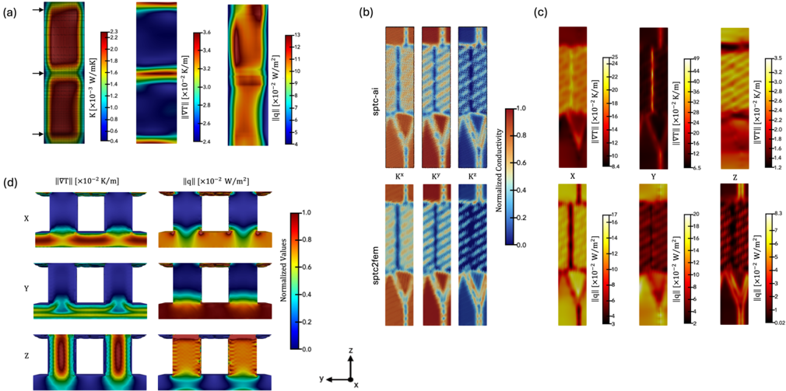

El paper presenta sptc-ai, un modelo de ML que predice la conductividad termica fononica espacialmente resuelta (SPTC) a nivel atomico en estructuras de silicio, y sptc2fem, que convierte esa informacion atomistica en propiedades de conductividad para mallas de elementos finitos con refinamiento adaptativo. El resultado es un pipeline que conecta la escala atomica con simulaciones termicas a escala nanometrica y valida la prediccion contra datos experimentales de nanohilos 3C/2H.
El Problema: Conductividad Termica en Estructuras Heterogeneas de Si
El silicio es el semiconductor mas usado, y la gestion termica es critica en dispositivos nanometricos donde la disipacion de calor limita el rendimiento. El problema es que la conductividad termica del Si no es uniforme: en estructuras amorfas, defectivas, o con interfaces entre fases cristalinas distintas (por ejemplo 3C-Si cubico y 2H-Si hexagonal), la conductividad varia de punto a punto segun el entorno atomico local.
Calcular esa variacion directamente con metodos cuanticos es prohibitivo para estructuras grandes. La solucion del paper es entrenar un modelo ML que prediga la SPTC local de cada atomo a partir de descriptores estructurales, y luego usar esas predicciones para alimentar un solver FEM que calcule el campo de temperatura y el flujo de calor en estructuras reales.
Pipeline Completo: Dos Modulos
sptc-ai
Modelo de ML entrenado con descriptores estructurales por atomo: numero de coordinacion, RMSD del angulo tetraedrico ideal, media y desviacion de longitudes de enlace, fraccion de enlaces cortos/largos. Predice la SPTC local (escalar o tensorial) de cada atomo.
sptc2fem
Toma el mapa de SPTC atomica de sptc-ai y lo convierte en un campo de conductividad continua sobre una malla FEM con refinamiento adaptativo (AMR con marcado Dorfler). Luego resuelve la ecuacion de difusion del calor y calcula flujos y gradientes de temperatura.
Descriptores Estructurales Usados
Numero de coordinacion (CN)
Cuenta cuantos atomos vecinos rodean a cada Si. En Si cristalino perfecto es 4; en amorfos puede variar, indicando defectos de coordinacion.
RMSD angular (∠rms)
Desviacion cuadratica media del angulo de enlace real respecto al angulo tetraedrico ideal (109.5°). Alta desviacion indica desorden local.
Media y desviacion de enlaces (Bμ, Bσ)
Longitud media y variabilidad de los enlaces Si-Si del entorno local. Capturan la distorsion mecanica de la red cristalina.
Fraccion de enlaces cortos/largos (BS, BL)
Complementan Bμ y Bσ codificando si el entorno tiende a tener enlaces comprimidos o estirados respecto a la longitud de equilibrio.
Resultados Clave
| Estructura | Capacidad demostrada | Hallazgo principal |
|---|---|---|
| Si amorfo / cristalino / defectivo | Test de precisión del modelo sptc-ai | Prediccion de SPTC reproducible a los valores calculados ab initio para los tres regimenes estructurales. |
| Interfaz amorfo-cristalino (2022 atomos) | Generalizacion a estructura no vista en entrenamiento | sptc-ai captura el gradiente de conductividad en la interfaz sin reentrenamiento. El FEM resuelve correctamente el campo termico con malla refinada en esa zona. |
| Nanocable con macla de grano (223 930 atomos) | Escalabilidad a sistemas grandes | La conductividad reducida en el plano de macla se predice y se traslada al FEM, mostrando anisotropia termica segun la direccion de carga. |
| Nanocable policristalino (134 923 atomos) | Heterogeneidad multidominio | Cada grano tiene conductividad distinta segun su orientacion y desorden en bordes de grano. El FEM captura la heterogeneidad sin asumir conductividad uniforme. |
| Nanopillar de Si (26 191 atomos) | Carga termica en geometria 3D | El refinamiento AMR concentra elementos donde la conductividad cambia mas rapido, dando convergencia eficiente. |
| Nanohilos 3C/2H (600-1000°C) | Validacion experimental | La conductancia areal predicha por sptc2fem coincide con medidas experimentales publicadas, validando el pipeline de extremo a extremo. |
Figuras Explicadas

Architecture and Training of sptc-ai. Empirical probability of high-SPTC outcome from binned distribution of the continuous structural descriptors, including (a) coordination number (CN), (b) root-mean-square deviation from the ideal tetrahedral angle (∠rms), (c) mean (Bμ) and (d) standard deviation (Bσ) of bond lengths, and the (e) fractions of short (BS) and (f) long (BL) bonds. (g) Farthest point sampling score. (h) Mean absolute error (MAE) for averaged directional SPTC and directly predicted isotropic SPTC for different training set sizes.
Esta figura es el corazon del entrenamiento de sptc-ai. Los paneles a)-f) muestran como cada descriptor correlaciona con la probabilidad de tener SPTC alta o baja: se ve que el numero de coordinacion (CN) y el desorden angular (∠rms) son los predictores mas discriminativos. El panel g) muestra la seleccion de puntos de entrenamiento por farthest-point sampling, que maximiza la cobertura del espacio estructural. El panel h) demuestra que el MAE converge con pocas centenas de estructuras de entrenamiento, haciendo el modelo eficiente.

Performance of sptc-ai. The NSPTC colorbar indicates the normalized SPTC (0=blue, 1=red), while Structure Class encodes the OVITO-based local environment: amorphous (0, gray), cubic diamond (1, blue), hexagonal diamond (4, orange) and their neighbors. Model performance on held-out test structures and generalization to an unseen amorphous-crystalline interface, a 223 930-atom Si twin-grain-boundary nanowire, a 134 923-atom polycrystalline Si nanowire, and a 26 191-atom Si nanopillar.
Esta figura valida la capacidad de generalizacion del modelo. El panel a) muestra que las distribuciones de SPTC predichas (abajo) coinciden muy bien con las calculadas (arriba) para Si amorfo, defectivo y cristalino puro. El panel b) demuestra generalizacion a una interfaz amorfo-cristalina de 2022 atomos no vista en entrenamiento: el modelo identifica correctamente donde cae la SPTC al cruzar la interfaz. Los paneles c)-e) muestran que el pipeline escala a cientos de miles de atomos sin degradacion visible.

Analysis of sptc2fem results for the amorphous-crystalline Si structure. (a) Anisotropic and isotropic SPTC and coarse-grained conductivity. (b) Adaptive mesh refinement with Dorfler marking, showing coarse and refined meshes. (c)(d) Dirichlet solve for thermal loading along z: flux magnitude and temperature gradient. (e) Steady-state temperature for K=1 and (f) for sptc-ai. (g)-(l) Slices at z=30 A of directional fluxes, flux magnitude, temperature-gradient magnitude, and flux residuals. (m) Histogram of continuity residual and (n) AMR convergence.
Esta figura demuestra el modulo sptc2fem completo en accion. El panel a) muestra el mapa de conductividad obtenido a partir de sptc-ai coarseado a la malla FEM. El panel b) ilustra el refinamiento adaptativo: la malla se engrosa en zonas de baja variacion y se refina en la interfaz amorfo-cristalina. Los paneles e) y f) comparan el campo de temperatura con conductividad uniforme (K=1) versus la predicha por sptc-ai: las diferencias en los gradientes de temperatura resaltan el impacto de la heterogeneidad local. El panel n) muestra convergencia del residuo con las iteraciones de refinamiento.

Analysis of the sptc2fem results for the other structures. (a) Twin grain boundary: isotropic conductivity, temperature gradient, and flux. (b) Polycrystalline Si: anisotropic SPTC and coarse-grained conductivity, plus temperature gradient and flux magnitude for loading along x, y, z. (d) Silicon nanopillar: temperature gradient and flux magnitude for loading along x, y, z.
Esta figura extiende el analisis sptc2fem a tres estructuras mas complejas. La macla de grano (a) muestra como el plano de defecto reduce la conductividad local y redirige el flujo de calor. El Si policristalino (b)-(c) exhibe anisotropia por grano: segun la direccion de carga, dominan distintos granos y bordes de grano. El nanopillar (d) muestra el impacto de la geometria 3D y el refinamiento AMR concentrado en el nucleo del pilar donde la conductividad cambia mas. En conjunto, la figura demuestra la generalidad del pipeline mas alla de la interfaz plana.

Experimental validation of the method. (a)-(d) Atomic-scale and FEM-scale 3C/2H nanowire models at annealing temperatures of 600, 700, 900, and 1000°C. The colormap spans low (black) to high (white) SPTC. (e) Experimental areal conductance compared with SPTC-derived values; the inset shows the percent relative difference ΔK. (f)-(i) Mesh refinement showing starting coarse and final refined meshes and convergence of the residual indicator.
Esta es la figura de validacion mas importante del paper. Los nanohilos 3C/2H de Si cambian su proporcion de fase cubica a hexagonal segun la temperatura de recocido. Los paneles a)-d) muestran que a mayor temperatura, la proporcion de 3C-Si (alta SPTC) crece y la de 2H-Si (baja SPTC) disminuye, lo que el modelo captura fielmente. El panel e) compara la conductancia areal predicha por sptc2fem contra datos experimentales publicados: el acuerdo es muy bueno (diferencias porcentuales pequenas segun el inset), validando el pipeline de ML+FEM de extremo a extremo con datos reales.
Sin caption extraido.
Elemento editorial de la primera pagina del articulo. No corresponde a una figura de resultados.
Modelo Mental Del Pipeline
Entrada: Estructura atomistica de Si (cualquier tamano, morfologia o fase) definida por coordenadas atomicas.
sptc-ai: Calcula descriptores locales por atomo (CN, angulos, longitudes de enlace), predice la SPTC de cada atomo con el modelo ML. Resultado: mapa escalar o tensorial de conductividad termica atomicamente resuelto.
sptc2fem: Coarsea el mapa atomico a una malla FEM, aplica refinamiento adaptativo (AMR) donde la conductividad varia mas rapido, y resuelve la ecuacion de difusion de calor. Resultado: campos de temperatura, gradientes y flujos de calor a escala nanometrica.
Validacion: La conductancia areal predicha concuerda con medidas experimentales en nanohilos 3C/2H a distintas temperaturas de recocido.
Resumen Final
El paper cierra una brecha importante en la modelizacion termica de semiconductores: la conductividad del Si heterogeneo no es uniforme, pero calcularlo ab initio en estructuras de cientos de miles de atomos es impracticable. sptc-ai aprende a predecir esa variacion local a partir de descriptores geometricos simples, y sptc2fem convierte esa prediccion en una simulacion FEM fisicamente consistente. La validacion experimental en nanohilos 3C/2H es la prueba mas solida: el modelo predice correctamente como cambia la conductancia termica con la temperatura de recocido sin ningun parametro ajustado manualmente. El pipeline es general y podria extenderse a otros semiconductores con descriptores equivalentes.
Archivo HTML generado desde el PDF local y las figuras ya extraidas en pappers/chemical_figures.